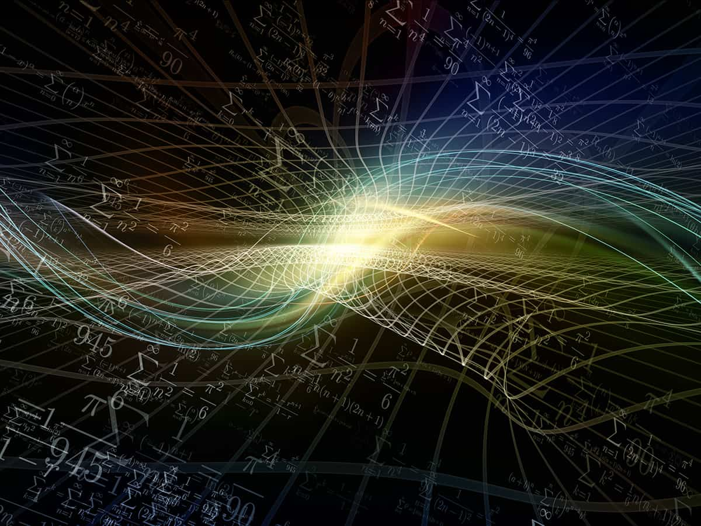

Quantics Algorithms
Quantum computing is shaking up the foundations of calculation by exploring the laws of quantum mechanics. Unlike classical algorithms which operate on binary bits (0 or 1), quantum computing is based on qubits (quantum bits). These fundamental elements have the fascinating property of superposition, being able to exist simultaneously in two states: 0 and 1. Thanks to this principle, a single qubit can explore a multitude of possibilities at the same time, increasing its power tenfold. calculation compared to a classic bit.
Quantics Algorithms: The conductors of quantum computing
Quantum algorithms play a crucial role in quantum computing, similar to computer programs in the classical world. They represent sequences of quantum operations, called quantum gates, applied to qubits to manipulate them and make them interact. These quantum gates, like their classical counterparts (AND, OR, NOT), perform logical operations on the qubits, modifying their state and making them evolve towards a final state.
How a quantum algorithm works
- Initialization: We define the initial state of the qubits, generally the state |0> (zero) for all qubits.
- Application of quantum gates: Quantum gates are applied successively, chaining logical operations (Hadamard, CNOT, etc.) on the qubits, making them evolve and creating quantum entanglements (instantaneous correlations between several qubits).
- Measurement: Measuring the final state of one or more qubits allows the calculation result to be obtained. However, the probabilistic nature of quantum mechanics only allows for a probability of obtaining a certain result, sometimes requiring repetitions of the circuit to refine the answer.
Examples of quantum algorithms and their applications
Quantum algorithms, by taking advantage of the unique properties of qubits, pave the way for many revolutionary applications in various fields:
- Breaking current encryption: Some quantum algorithms, like Shor, could make current encryption methods, such as RSA, used to secure online transactions obsolete. This would require the development of new cryptographic protocols that are more resistant to quantum attacks.
- Accelerate the simulation of complex systems: The modeling of complex molecules, new materials or financial systems could be considerably accelerated thanks to the power of quantum algorithms. This would make it possible to explore new avenues of research and development in many areas, such as the design of new drugs or the discovery of materials with new properties.
- Optimization and logistics: The optimization of production processes, inventory management or road traffic could be improved thanks to the capacity of quantum algorithms to explore numerous possibilities simultaneously, making it possible to find optimized solutions faster.
- Discovery of new materials: The simulation of complex systems at the atomic scale makes it possible to predict the properties of new materials, paving the way for technological advances in areas such as energy, electronics and aerospace.
- Development of new drugs: Precise simulation of interactions between molecules makes it possible to design new drugs that are more effective and less harmful to patients.
The challenges of developing quantum algorithms
Despite its immense potential, the development of efficient quantum algorithms remains a major challenge:
- Design complexity: Developing efficient quantum algorithms adapted to concrete problems is a complex and active area of research. It is not enough to simply transpose classical algorithms using the principles of quantum computing. New algorithms must be designed to fully exploit the capabilities of quantum circuits.
- Cost and infrastructure: Building powerful quantum computers is extremely expensive and requires specific infrastructure. This limits access to this technology to large research centers and private companies. It is important to develop more affordable and accessible solutions so that quantum computing can develop and benefit more people.
- Ethics and security:Quantum computing also raises questions of ethics and security. The computing power of quantum computers could be used for malicious purposes, such as hacking or developing weapons. It is important to think about these questions and put appropriate security measures in place.
Quantum computing is a growing field that has the potential to revolutionize many aspects of our lives. Many challenges still need to be overcome before this technology can reach its full potential. Research and development in this area is very active and it is likely that significant new breakthroughs will be made in the years to come.